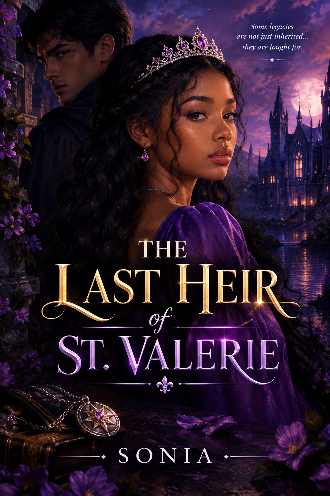

Chapter One
The Girl Who Had No Past
The first time Amara Vale heard her name whispered in the dark, she thought she was dreaming.
“Amara…”
Her eyes opened slowly.
For a few seconds, she remained perfectly still. The room was dark except for the pale moonlight slipping through the curtains.
She listened.
Nothing.
Amara pulled the blanket closer to her body.
Maybe it had been the wind.
She closed her eyes again.
“Amara…”
Her eyes flew open.
This time, the voice was clearer.
Someone had whispered her name from outside.
Amara slowly sat up.
Her eyes moved toward the clock beside her bed.
2:17 a.m.
Her heart began beating faster.
Who would be outside at this hour?
She climbed out of bed and walked quietly toward the window.
Her fingers touched the curtain.
She hesitated.
Then she pulled it aside.
The street below was empty.
No cars.
No pedestrians.
Nothing.
Amara sighed with relief.
Then she saw him.
A boy stood underneath the old streetlamp across the road.
He was dressed completely in black.
His face was partly hidden by the darkness, but Amara could tell that he was looking directly at her window.
She stepped backward.
The boy lifted his hand.
Something silver flashed between his fingers.
A necklace.
Amara immediately touched the pendant around her own neck.
It was the old silver pendant her mother had given her when she was five years old.
Her mother had always told her never to take it off.
Amara had never understood why.
The boy pointed toward her pendant.
Then he mouthed four words.
“They found you.”
Amara's breath caught in her throat.
She blinked.
The boy was gone.
The Morning After
Amara barely slept for the rest of the night.
By morning, she had convinced herself that what she had seen was nothing more than a nightmare.
She stood in front of her mirror, brushing her hair.
“You're imagining things,” she whispered to herself.
She looked down at the pendant around her neck.
It was small and silver, with a strange purple stone in the middle.
She had never seen anything else like it.
Suddenly, there was a knock on her bedroom door.
Amara quickly covered the pendant with her shirt.
“Amara? You're going to be late for school!”
It was Mrs. Grace, the woman who had raised her since her mother's death.
“I'm coming!”
Amara grabbed her schoolbag and hurried downstairs.
Mrs. Grace was standing in the kitchen.
She looked at Amara carefully.
“Did you sleep well?”
Amara paused.
“Yes.”
Mrs. Grace stared at her for another moment.
“Are you sure?”
“I'm fine.”
Mrs. Grace looked away.
There was something strange about her expression.
Amara noticed it.
“Mrs. Grace?”
“Yes?”
“Did my mother ever tell you anything about where I was born?”
The spoon in Mrs. Grace's hand suddenly stopped moving.
“Why are you asking that?”
“I was just curious.”
Mrs. Grace forced a smile.
“You were born here.”
“Where?”
“In the city.”
“Which hospital?”
Mrs. Grace became silent.
Amara noticed.
“Mrs. Grace?”
“You should go to school.”
Amara frowned.
That was not an answer.
A Strange Book
By the time Amara arrived at school, she had almost forgotten about the conversation.
Almost.
She walked through the school gates and headed toward the library.
She loved the library.
It was the quietest place in the entire school.
Amara walked between the shelves, searching for a history book for her assignment.
She pulled one book from the shelf.
Nothing.
She tried another.
Then she noticed a dusty black book hidden behind several old textbooks.
She pulled it out.
There was no author's name on the cover.
Only three words were written in silver letters.
THE KINGDOM OF VALERIA
Amara's heart skipped.
She had never heard of Valeria.
She opened the book.
The first page contained a drawing of a beautiful kingdom surrounded by mountains.
Beneath the drawing was a sentence.
“When the crown falls, the last heir will return.”
Amara stared at the words.
A strange feeling passed through her.
She turned the page.
There was a picture of a woman.
Amara froze.
The woman looked exactly like her.
Same eyes.
Same dark hair.
Even the same pendant.
Written underneath the picture were two words:
Princess Elena.
Amara's hands began to shake.
Elena was her mother's name.
The Mysterious Boy
“You shouldn't be reading that.”
Amara nearly dropped the book.
She turned around.
The boy from the night before was standing at the entrance of the library.
Amara stared at him.
“You.”
He walked toward her.
“Give me the book.”
“Who are you?”
“Someone trying to keep you alive.”
Amara laughed nervously.
“That's supposed to make me feel better?”
The boy didn't smile.
“What's your name?”
He looked directly into her eyes.
“Lucian.”
“Lucian what?”
“Just Lucian.”
Amara folded her arms.
“You were outside my house last night.”
Lucian's expression changed.
“You shouldn't have seen me.”
“Why?”
“Because now they know I found you.”
“Who are they?”
Lucian stepped closer.
“People who have been searching for you for seventeen years.”
Amara's face went pale.
“What are you talking about?”
“Your mother never told you the truth, did she?”
“Don't talk about my mother.”
“Then ask yourself why she spent your entire childhood hiding who you really are.”
Amara stared at him.
“Who am I?”
Lucian looked at the pendant around her neck.
“The last heir of St. Valerie.”
The Hidden Door
Before Amara could respond, the library lights went out.
Complete darkness filled the room.
Amara heard footsteps.
Several footsteps.
“They're here,” Lucian whispered.
“Who?”
“Run.”
Lucian grabbed her hand.
They rushed between the bookshelves.
“Where are we going?”
“Somewhere they can't reach us.”
Lucian stopped beside an old bookshelf.
He pressed his hand against a small symbol carved into the wood.
The bookshelf moved.
Amara stared in shock.
Behind it was a narrow staircase leading underground.
“What is this?”
“The entrance to your past.”
Amara looked back toward the library.
Shadows moved between the shelves.
Someone was coming.
Lucian pulled her down the stairs.
The hidden door closed behind them.
They continued downward.
The air became colder.
After several minutes, Amara saw a faint purple light ahead of them.
She walked faster.
Then she stopped.
Her mouth fell open.
Beneath the school was an enormous underground city.
Towers rose from the darkness.
Bridges crossed glowing rivers.
Purple lights floated above the streets.
And at the very center stood a magnificent castle.
Amara stared at it in disbelief.
“Welcome home,” Lucian said quietly.
Amara turned toward him.
“What is this place?”
Lucian looked at the castle.
“Valeria.”
Amara looked down at her pendant.
For the first time in her life, the purple stone began to glow.
Then a voice echoed through the underground kingdom.
“The heir has returned.”
Amara looked toward the castle.
Every light in the kingdom suddenly turned purple.
And somewhere deep beneath the castle, something ancient opened its eyes.
End of Chapter One
To be continued...
💬 Comments